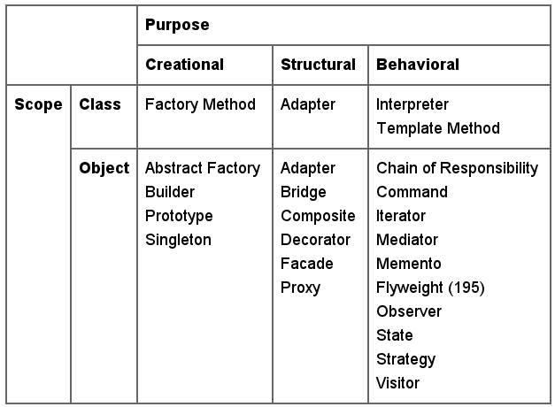

Креирано 2025-11-04 Tue 10:57, притисни ESC за мапу, Ctrl+Shift+F за претрагу, "?" за помоћ
Експерти ће поново примењивати решења која су се показала као добра у прошлости.
Дефиниција са The Free Dictionary:
The ability to use all or the greater part of the same programming code or system design in another application.
Christopher Alexander и сар. су написали*:
Each pattern describes a problem which occurs over and over again in our environment, and then describes the core of the solution to that problem, in such a way that you can use this solution a million times over, without ever doing it the same way twice.
* Christopher Alexander, Sara Ishikawa, Murray Silverstein, Max Jacobson,
Ingrid Fiksdahl-King, and Shlomo Angel. A Pattern Language. Oxford University
Press, New York, 1977.
Сваки образац описује проблем који се појављује наново у нашем окружењу, и затим описује суштину решења датог проблема на такав начин да решење можете применити милион пута а да никада не решите проблем на потпуно идентичан начин.
Рецепт настао на бази кумулираног експертског знања и искуства у решавању одређеног рекурентног проблема у развоју софтвера који описује проблем, решење и контекст у коме је решење примењиво као и предности и мане решења.
Избор програмског језика и програмске парадигме са становишта софтверских образаца је важан!

Класификација ОО дизајн образаца према [1]:
* Anti-pattern, From Wikipedia, the free encyclopediaАнтиобрасци исказују следеће особине:
Примери антиобразаца су*:
* За шири списак видети http://en.wikipedia.org/wiki/Anti-pattern